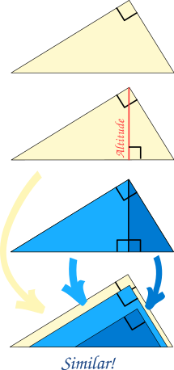
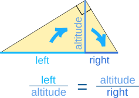
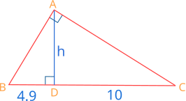
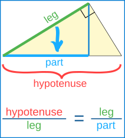
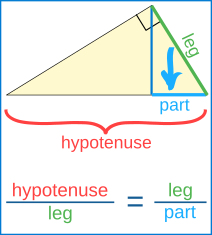
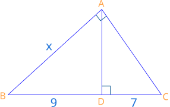
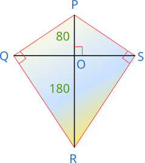
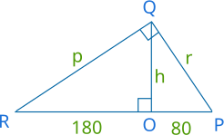

Mean Proportional
and the Altitude and Leg Rules
Mean Proportional
The mean proportional of a and b is the value x here:
ax = xb
"a is to x, as x is to b"
It looks kind of hard to solve, doesn't it?
But when we cross multiply (multiply both sides by b and also by x) we get:
And now we can solve for x:
x = √(ab)
Example: What's the mean proportional of 2 and 18?
We are being asked "What's the value of x here?"
2x = x18
"2 is to x, as x is to 18"
We know how to solve it:
x = √(2×18) = √(36) = 6
And this is what we end up with:
26 = 618
It is like 6 is the "multiplication middle" (2 times 3 is 6, 6 times 3 is 18):
(And is the geometric mean of the two numbers.)
One more example so you get the idea:
Example: What's the mean proportional of 5 and 500?
x = √(5×500)
x = √(2500) = 50
Like this:

Right Triangles
We can use the mean proportional with right triangles.
First, an interesting thing:
- Take a right triangle
- Put in an altitude line to the hypotenuse (the long side)
- It divides the triangle into two smaller triangles, yes?
Those two new triangles are similar to each other, and to the original triangle!
This is because they all have the same three angles.
Try it yourself: cut a right triangle from a piece of paper, then cut it through the altitude and see if the pieces are really similar.
We can use this knowledge to solve some things.
In fact we get two rules, the Altitude Rule and the Leg Rule:
Altitude Rule
The altitude is the mean proportional between the left and right parts of the hypotenuse, like this:

Example: Find the height h of the altitude (AD)

Use the Altitude Rule:
leftaltitude = altituderight
Which for us is:
4.9h = h10
And solve for h:
Leg Rule
Each leg of the triangle is the mean proportional between the hypotenuse and the part of the hypotenuse directly below the leg:


Example: What's x (the length of leg AB) ?

First find the hypotenuse: BC = BD + DC = 9 + 7 = 16
Now use the Leg Rule:
hypotenuseleg = legpart
Which for us is:
16x = x9
And solve for x:
- In the Altitude Rule, the altitude separates the hypotenuse into two pieces: left and right
- In the Leg Rule, we use the whole hypotenuse together with the piece touching that leg
Here's a real world example:

Example: Sam loves kites!
Sam wants to make a really big kite:
- It has two struts PR and QS that intersect at a right angle at O
- PO = 80 cm and OR = 180 cm
- The fabric of the kite has right angles at Q and S
Sam wants to know the length for the strut QS, and also the lengths of each side.
We only need to look at half the kite to do the calculations. Here's the left half rotated 90°:

Use the altitude rule to find h:
So the full length of the strut QS = 2 × 120 cm = 240 cm
The length RP = RO + OP = 180 cm + 80 cm = 260 cm
Now use the Leg Rule to find r (leg QP):
Use the Leg Rule again to find p (leg QR):
Tell Sam the strut QS will be 240 cm, and the sides will be 144 cm and 216 cm.
Can't wait for a windy day!